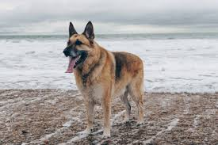

PASTOR ALEMAN

El Pastor Alemán es una de las razas de perro
que más han sufrido por su aspecto estético,
tanto, que podríamos incluso distinguir dos tipos:
el de concurso de belleza y el de trabajo.
Como podemos ver hay varias diferencias, tal vez
la que percibimos menos sea el tamaño. Actualmente
un pastor alemán puede pesar unos 38 kilos, pero
anteriormente no llegaban a más de 25. Su agilidad
y fuerza en las patas traseras les permitían saltar
alturas de 2,5 metros.
Las modificaciones genéticas en el Pastor Alemán
destinado a ser bello, hace que sean muy propensos
a la displasia de caderas, de tal forma que muchos
acarrean problemas de columna por la deformación que
se ha ido haciendo presente, y acaban sin poder caminar
al llegar a la vejez en algunos de los casos más severos.
Además de ello, son muy sensibles digestivamente.